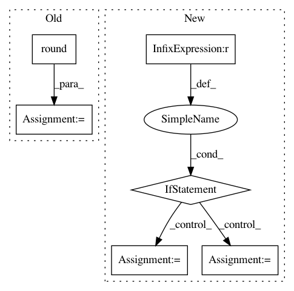

5601c4bb909b4146327fa68c6d5b668f997baaff,pyinterpret/data/dataset.py,DataSet,_build_metastore,#DataSet#Any#,125
Before Change
round_to = n_rows / float(bin_count)
rounder_func = lambda x: int(round_to * round(float(x) / round_to))
ranks_rounded = map(rounder_func, ranks)
ranks_rounded = np.array([round(x, 2) for x in ranks / ranks.max()])
return {
"median": medians,
"dists": dists,
"n_rows": n_rows,
After Change
bins = np.linspace(0, 100, num=bin_count + 1)
unique_dists = np.unique(dists)
if len(unique_dists) > 1:
ranks_rounded = pd.qcut(dists, bins / 100, labels=False)
unique_ranks = np.unique(ranks_rounded)
else:
ranks_rounded = np.ones(n_rows)
unique_ranks = np.ones(1)
return {
"median": medians,
"dists": dists,
"n_rows": n_rows,
In pattern: SUPERPATTERN
Frequency: 3
Non-data size: 6
Instances
Project Name: datascienceinc/Skater
Commit Name: 5601c4bb909b4146327fa68c6d5b668f997baaff
Time: 2017-03-21
Author: aikramer2@gmail.com
File Name: pyinterpret/data/dataset.py
Class Name: DataSet
Method Name: _build_metastore
Project Name: WZBSocialScienceCenter/tmtoolkit
Commit Name: 098f69b7c2282a556fc0b57d37b70328457de834
Time: 2017-10-11
Author: markus.konrad@wzb.eu
File Name: tmtoolkit/lda_utils/evaluation_lda.py
Class Name: MultiprocEvaluationWorkerLDA
Method Name: fit_model_using_params
Project Name: mathics/Mathics
Commit Name: 3682971abb85dd12991152d55cb687e259331419
Time: 2016-08-10
Author: 16sn6uv@gmail.com
File Name: mathics/builtin/numeric.py
Class Name: Round
Method Name: apply